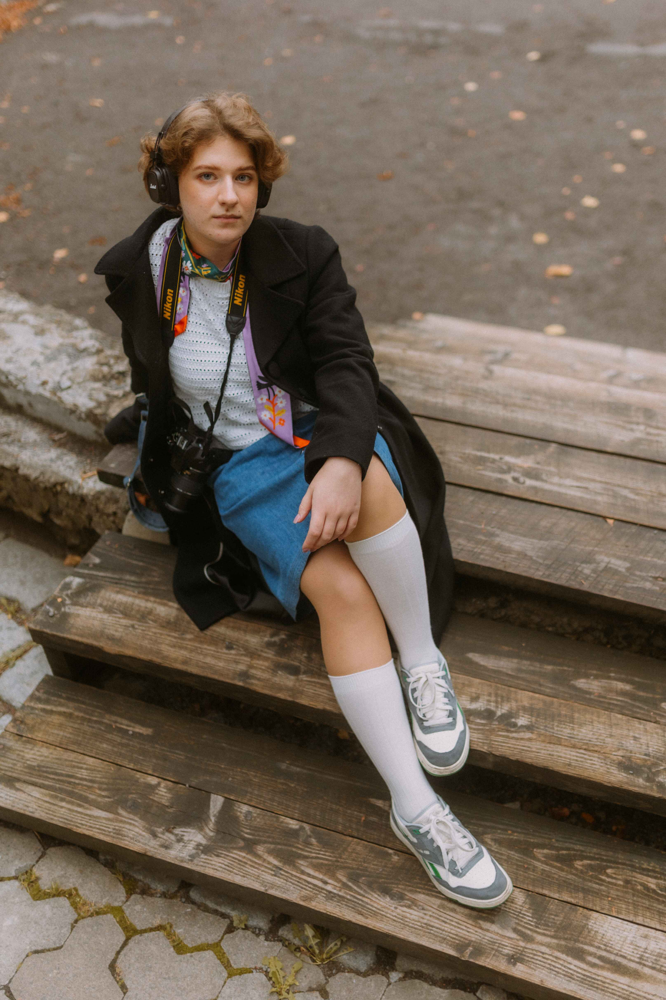
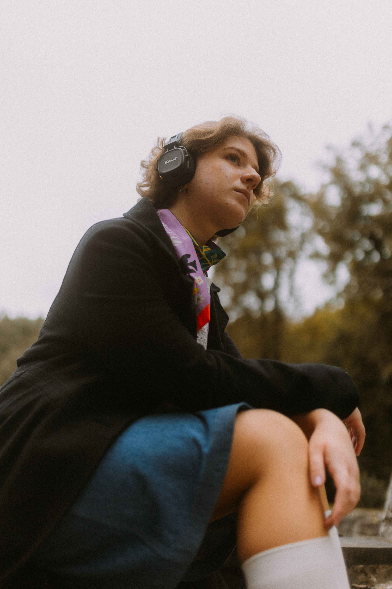

Хто така Тіні Тіна?
"Горю тим, що роблю, роблю те, чим горю!"
Привіт!
Я Христя, я графічна дизайнерка та ілюстраторка! Чому ж я tiny tina (в жарт друзі кличуть тіні тіна), спитаєте ви? Якось мій друг грав у Tiny Tina's Wonderlands і почав називати мене іменем головної героїні. За декілька років я до цього звикла і це навіть почало мені подобатись. У підсумку я перейменувала свій інстаграм і підписую так діджитал роботи.
Це я 👇
 І це теж я, але очима моєї подруги Іваночки 👇

Щось цікаве (або не дуже цікаве) про мене
- Граю на гітарі
- Займаюсь фотографією
- Люблю активний відпочинок
- Обожнюю читати художні книжки і мрію їх колись ілюструвати
- Люблю гори, хочу колись жити десь посеред Карпат
- Люблю смачно поїсти